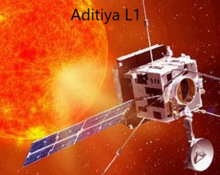
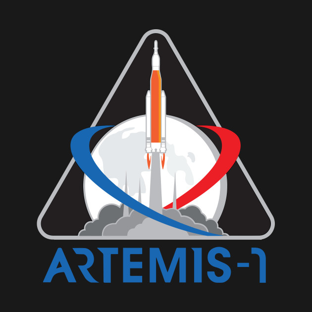

Chandrayaan-3, India's third mission to Moon, is likely to be launched in 2022, ISRO chief K. Sivan
has
said.
The COVID-19 lockdown has hit several projects of the Indian Space Research Organisation (ISRO)
including
Chandrayaan-3, which was scheduled to be launched in late 2020, and Gaganyaan, the country's first
manned
space
mission.Unlike its predecessor, Chandrayaan-3 will not have an orbiter.
“We are working on it. It is the same configuration like Chandrayaan-2 but it will not have an orbiter. The orbiter launched during Chandrayaan-2 will be used for Chandrayaan-3. With that we are working on a system and mostly the launch will be next year in 2022,” Mr. Sivan told PTI.
Chandrayaan-2, aimed at landing a rover on unchartered Lunar South Pole, was launched on July 22, 2019 on board the country's most powerful geosynchronous launch vehicle.
However, the lander Vikram hard-landed on September 7, 2019, crashing India's dream to become the first nation to successfully land on the lunar surface in its maiden attempt.
Chandrayaan-3 is critical for ISRO as it will demonstrate India's capabilities to make landing for further interplanetary missions.
He said ISRO is targeting December to launch the first unmanned mission under the Gaganyaan project. The mission was originally scheduled to launch in December last year.
It will be followed by another unmanned mission and the third leg is the main module, he said.
Gaganyaan envisages to send three Indians to space by 2022. The four test pilots selected for the mission are currently undergoing training in Russia.
When asked about the launch of the third module of Gaganyaan – the manned mission – Mr. Sivan said, “A lot of technology needs to be demonstrated. We will decide on the time (of the manned mission) after checking whether all the technology is perfect.”

Aditya - L1 First Indian mission to study the Sun
The Aditya-1 mission was conceived as a 400kg class satellite carrying one payload, the Visible
Emission
Line
Coronagraph (VELC) and was planned to launch in a 800 km low earth orbit. A Satellite placed in the halo
orbit
around the Lagrangian point 1 (L1) of the Sun-Earth system has the major advantage of continuously
viewing
the
Sun without any occultation/ eclipses. Therefore, the Aditya-1 mission has now been revised to
“Aditya-L1
mission” and will be inserted in a halo orbit around the L1, which is 1.5 million km from the Earth. The
satellite carries additional six payloads with enhanced science scope and objectives.Image credit: Udaipur Solar Observatory – PRL (Ground-based)
Image credit: Udaipur Solar Observatory – PRL (Ground-based)
The project is approved and the satellite will be launched during 2019 – 2020 timeframe by PSLV-XL from Sriharikota.
Aditya-1 was meant to observe only the solar corona. The outer layers of the Sun, extending to thousands of km above the disc (photosphere) is termed as the corona. It has a temperature of more than a million degree Kelvin which is much higher than the solar disc temperature of around 6000K. How the corona gets heated to such high temperatures is still an unanswered question in solar physics.
Aditya-L1 with additional experiments can now provide observations of Sun's Corona (soft and hard X-ray, Emission lines in the visible and NIR), Chromosphere (UV) and photosphere (broadband filters). In addition, particle payloads will study the particle flux emanating from the Sun and reaching the L1 orbit, and the magnetometer payload will measure the variation in magnetic field strength at the halo orbit around L1. These payloads have to be placed outside the interference from the Earth’s magnetic field and could not have been useful in the low earth orbit.
The main payload continues to be the coronagraph with improved capabilities. The main optics for this experiment remains the same. The complete list of payloads, their science objective and lead institute for developing the payload is provided below:
Visible Emission Line Coronagraph (VELC): To study the diagnostic parameters of solar corona and dynamics and origin of Coronal Mass Ejections (3 visible and 1 Infra-Red channels); magnetic field measurement of solar corona down to tens of Gauss – Indian Institute of Astrophysics (IIA)
Solar Ultraviolet Imaging Telescope (SUIT): To image the spatially resolved Solar Photosphere and Chromosphere in near Ultraviolet (200-400 nm) and measure solar irradiance variations - Inter-University Centre for Astronomy & Astrophysics (IUCAA)
Aditya Solar wind Particle Experiment (ASPEX) : To study the variation of solar wind properties as well as its distribution and spectral characteristics – Physical Research Laboratory (PRL)
Plasma Analyser Package for Aditya (PAPA) : To understand the composition of solar wind and its energy distribution – Space Physics Laboratory (SPL), VSSC
Solar Low Energy X-ray Spectrometer (SoLEXS) : To monitor the X-ray flares for studying the heating mechanism of the solar corona – ISRO Satellite Centre (ISAC)
High Energy L1 Orbiting X-ray Spectrometer (HEL1OS): To observe the dynamic events in the solar corona and provide an estimate of the energy used to accelerate the particles during the eruptive events - ISRO Satellite Centre (ISAC)and Udaipur Solar Observatory (USO), PRL
Magnetometer: To measure the magnitude and nature of the Interplanetary Magnetic Field – Laboratory for Electro-optic Systems (LEOS) and ISAC.
With the inclusion of multiple payloads, this project also provides an opportunity to solar scientists from multiple institutions within the country to participate in space based instrumentation and observations. Thus the enhanced Aditya-L1 project will enable a comprehensive understanding of the dynamical processes of the sun and address some of the outstanding problems in solar physics.
China eyes 40+ launches in 2021, space station a top priority
China plans to conduct more than 40 space launches in 2021, with the construction of the country's first
space station as its top priority, leading domestic rocket contractor China Aerospace Science and
Technology Corp (CASC) said on Wednesday.In the 2020 Blue Book of China Aerospace Science and Technology Activities issued at a press conference on Wednesday, CASC said parts of the space station, including the Tianhe core cabinet, the Tianzhou-2 and -3 cargo spaceships, and the Shenzhou-12 and -13 manned spacecraft, will be sent into space in 2021.
Another seven commercial launches are planned, which will be open to market users wishing to send micro-sized and small satellites into space, the Blue Book said.
China carried out 39 launches in 2020, sending 89 spacecraft into space and breaking the record for total weight at 103.06 tons, a 29.3-percent increase from the previous year.
China's number of space launches and weight of payloads in 2020 both ranked second in the world after the US, marking major strides forward in China's space exploration, the Blue Book said.
Rounding up the year's aerospace developments, China made remarkable achievements in a number of cutting-edge technologies and major breakthroughs in space missions, it said.
China's latest state-of-the-art carrier rocket, the Long March-5B, made a successful maiden flight in May, sending the assembly of a trial version of the next-generation manned spaceship with a test cargo-returning spacecraft into planned orbit.
The trial run opened the official chapter of China's space station construction, which "lays a solid foundation for a future manned landing on the Moon," said the Blue Book.
During the experimental flight, China conducted a series of space experiments such as its first attempt of in-orbit 3D printing, which aimed to study the feasibility of "self-made" manufacturing in space to address the problem of long supply lines during exploration missions.
Even more thrilling for space fans over the world, China embarked on voyages to the moon and Mars in 2020, suggesting China's growing confidence in the field after years of unremitting efforts.
The country's first Mars exploration project, Tianwen-1, which has a triple mission of orbiting, landing and roving in one flight, embarked on a journey to the Red Planet on July 23, 2020.
After flying in space for 215 days, which took it some 212 million kilometers from Earth, it successfully entered the Martian orbit on Wednesday and will remain there for another three months, with all payloads powered on for scientific study, before eventually touching down, China's National Space Administration said in a statement sent to the Global Times.
China's first lunar sample-retrieval mission, Chang'e-5, concluded its journey on December 17, 2020 after a 23-day adventure to the neighboring celestial body, bringing back with it 1,731 grams of lunar soils, and making China the third country to have successfully brought lunar samples back to Earth after the US and the former Soviet Union.
As one of the most complex and challenging tasks in the country's aerospace history, Chang'e-5 achieved multiple firsts, including the first-ever takeoff from the lunar surface, and the first rendezvous and docking in the lunar orbit.
Impressive as the achievements are, Chinese space analysts note that there remain some technological gaps in the field compared with the US. Song Zhongping, an aerospace expert and TV commentator, told the Global Times on Wednesday that the US is still the leading force in the global space exploration race.
"Beginning in the 1960s, the US got a head start. Thanks to a relatively strong scientific base that laid the groundwork for aerospace development, the US has formed a more mature, balanced mode with NASA leading the national space programs and Elon Musk spearheading the drive in commercial areas of the aerospace industry."
However, he noted that China has developed its own path, different from the US. "We drew the blueprint for future space missions as a whole and then divided it into parts, which will be realized step by step in a steady manner."
Song illustrated this idea using the examples of China's BeiDou Navigation Satellite System, deep-space exploration, and manned missions.
Despite the ravaging pandemic that struck the world last year, China not only kept its head high and made steady strides in its own space missions, but it also engaged in multiple space cooperation projects with countries including Argentina, Ethiopia, Egypt and other countries along the Belt and Road routes.
Various types of cooperation were involved, such as satellite exports, cooperative research and development, satellite launches, and application services.
L.I.S.A.
The Laser Interferometer Space Antenna (LISA) is a proposed space probe to detect and accurately measure
gravitational waves—tiny ripples in the fabric of space-time—from astronomical sources. LISA would be
the first dedicated space-based gravitational wave detector. It aims to measure gravitational waves
directly by using laser interferometry. The LISA concept has a constellation of three spacecraft
arranged in an equilateral triangle with sides 2.5 million km long, flying along an Earth-like
heliocentric orbit. The distance between the satellites is precisely monitored to detect a passing
gravitational wave.The LISA project started out as a joint effort between NASA and the European Space Agency (ESA). However, in 2011, NASA announced that it would be unable to continue its LISA partnership with the European Space Agency due to funding limitations. The project is a recognized CERN experiment (RE8). A scaled down design initially known as the New Gravitational-wave Observatory (NGO) was proposed as one of three large projects in ESA's long term plans. In 2013, ESA selected 'The Gravitational Universe' as the theme for one of its three large projects in the 2030s. whereby it committed to launch a space based gravitational wave observatory.
In January 2017, LISA was proposed as the candidate mission. On June 20, 2017 the suggested mission received its clearance goal for the 2030s, and was approved as one of the main research missions of ESA.
The LISA mission is designed for direct observation of gravitational waves, which are distortions of space-time travelling at the speed of light. Passing gravitational waves alternately squeeze and stretch objects by a tiny amount. Gravitational waves are caused by energetic events in the universe and, unlike any other radiation, can pass unhindered by intervening mass. Launching LISA will add a new sense to scientists' perception of the universe and enable them to study phenomena that are invisible in normal light.
Potential sources for signals are merging massive black holes at the centre of galaxies, massive black holes orbited by small compact objects, known as extreme mass ratio inspirals, binaries of compact stars in our Galaxy, and possibly other sources of cosmological origin, such as the very early phase of the Big Bang, and speculative astrophysical objects like cosmic strings and domain boundaries.
The LISA mission's primary objective is to detect and measure gravitational waves produced by compact binary systems and mergers of supermassive black holes. LISA will observe gravitational waves by measuring differential changes in the length of its arms, as sensed by laser interferometry. Each of the three LISA spacecraft contains two telescopes, two lasers and two test masses (each a 46 mm, roughly 2 kg, gold-coated cube of gold/platinum), arranged in two optical assemblies pointed at the other two spacecraft. This forms Michelson-like interferometers, each centred on one of the spacecraft, with the test masses defining the ends of the arms. The entire arrangement, which is ten times larger than the orbit of the Moon, will be placed in solar orbit at the same distance from the Sun as the Earth, but trailing the Earth by 20 degrees, and with the orbital planes of the three spacecraft inclined relative to the ecliptic by about 0.33 degree, which results in the plane of the triangular spacecraft formation being tilted 60 degrees from the plane of the ecliptic. The mean linear distance between the formation and the Earth will be 50 million kilometres.
To eliminate non-gravitational forces such as light pressure and solar wind on the test masses, each spacecraft is constructed as a zero-drag satellite. The test mass floats free inside, effectively in free-fall, whilst the spacecraft around it absorbs all these local non-gravitational forces. Then, using capacitive sensing to determine the spacecraft's position relative to the mass, very precise thrusters adjust the spacecraft so it follows, keeping itself centered around the mass.
A.T.H.E.N.A.
Athena – Advanced Telescope for High-ENergy Astrophysics – will be an X-ray telescope designed to
address the Cosmic Vision science theme 'The Hot and Energetic Universe'. By combining a large X-ray
telescope with state-of-the-art scientific instruments, Athena will be able to make an important
contribution to answering these questions. In 2014, Athena was selected as the second large (L-class)
mission in ESA's Cosmic Vision programme. The primary goals of the mission are to map hot gas
structures, determine their physical properties, and search for supermassive black holes.The mission has its roots in two concepts from the early 2000s, ESA’s XEUS and NASA’s Constellation-X. Around 2008, these two proposals were merged into the joint NASA/ESA/JAXA International X-ray Observatory (IXO) proposal. In 2011, IXO was withdrawn and then ESA decided to proceed with a cost-reduced modification, which became known as ATHENA. Athena was selected in 2014 to become the second (L2) L-class Cosmic Vision mission, addressing the Hot and Energetic Universe science theme.
The scientific advice for the Athena mission is provided by the Athena Science Study Team (ASST) composed of expert scientists from the community. The ASST was appointed by ESA on 16 July 2014. The ESA Study Scientist and Study Manager are Dr Matteo Guainazzi and Dr Mark Ayre respectively.
Athena completed successfully its Phase A with the Mission Formulation Review on 12 November 2019. The next key milestone will be the mission adoption by ESA’s Science Programme Committee (SPC) expected in the second half of 2022, leading to launch in the early 2031s.
In the early 2031s, an Ariane 6.4 launch vehicle will lift Athena into a large amplitude halo orbit around the L2 point of the Sun-Earth system (although an alternative L1 halo orbit is also under consideration). The orbit around L2 was selected due to its stable thermal environment, good sky visibility, and high observing efficiency. Athena will perform pre-planned scheduled observations of up to 300 celestial locations per year. A special Target of Opportunity mode will allow a re-point manoeuvre within 4 hours for 50% of any randomly occurring events in the sky.
The Athena X-ray observatory consists of a single X-ray telescope with a 12 m focal length, with an effective area of approx. 1.4 m2 (at 1 keV) and a spatial resolution of 5 arcseconds on-axis, degrading gracefully to less than 10 arcseconds at 30 arcminutes off-axis. The mirror is based on ESA’s Silicon Pore Optics (SPO) technology. SPO provides an excellent ratio of collecting area to mass, while still offering a good angular resolution. It also benefits from a high Technology Readiness Level and a modular design highly amenable to mass production necessary to achieve the unprecedented telescope collecting area. A movable mirror assembly can focus X-rays onto either one of Athena's two instruments (WFI and X-IFU, see below) at any given time. Both the WFI and X-IFU successfully passed their Preliminary Requirements Reviews, on 31 October 2018 and 11 April 2019 respectively.
Wide Field Imager
- 1. The Wide Field Imager (WFI):
- 2. X-ray Integral Field Unit (X-IFU):
PLATO (spacecraft)
PLAnetary Transits and Oscillations of stars (PLATO) is a space telescope under development by the
European Space Agency for launch in 2026. The mission goals are to search for planetary transits across
up to one million stars, and to discover and characterize rocky extrasolar planets around yellow dwarf
stars (like our sun), subgiant stars, and red dwarf stars. The emphasis of the mission is on earth-like
planets in the habitable zone around sun-like stars where water can exist in liquid state. It is the
third medium-class mission in ESA's Cosmic Vision programme and named after the influential Greek
philosopher Plato, the founding figure of Western philosophy, science and mathematics. A secondary
objective of the mission is to study stellar oscillations or seismic activity in stars to measure
stellar masses and evolution and enabling the precise characterization of the planet host star,
including its age.The objective is detection of terrestrial exoplanets up to the habitable zone of solar-type stars and characterisation of their bulk properties needed to determine their habitability. To achieve this objective, the mission has these goals:
- Discover and characterize many nearby exoplanetary systems, with a precision in the determination of the planet radius up to 3%, of stellar age up to 10%, and of the planet mass up to 10% (the latter in combination with on-ground radial velocity measurements).
- Detect and characterize Earth-sized planets and super-Earths in the habitable zone around solar-type stars.
- Discover and characterize many exoplanetary systems to study their typical architectures, and dependencies on the properties of their host stars and the environment.
- Measure stellar oscillations to study the internal structure of stars and how they evolves with age.
- Identify good targets for spectroscopic measurements to investigate exoplanet atmospheres.
South Australia to launch own satellite into space
South Australia is set to become the first Australian state to launch a satellite into space, with the government and private sector investing $6.5 million into the project.The small communications and data collection unit is expected to improve services like emergency management, environment and water quality monitoring as well as helping to reduce bushfire impact.
Premier Steven Marshall made the announcement today, saying the initiative will boost SA's space economy and establish them as Australia's "space state".
"South Australia is embarking on a bold mission with industry to design and build a satellite to deliver space-derived services to the state, a venture never undertaken before by any state government," Mr Marshall said.
"Not only will the satellite help us make better decisions for state services, it cements South Australia as the space state."
The mission will be led by SmartSat Cooperative Research Centre and Inovor Technologies, an Adelaide-based manufacturing company, will design and build it.
Planning and development is already underway and the satellite is expected to be ready for launch by around mid 2022.
India's PSLV-C51 to launch Brazil's Amazonia-1, 18 co-passenger satellites satellites on 27th February, 2021
India's workhorse Polar Satellite Launch Vehicle (PSLV-C51) is scheduled to take off from the Satish Dhawan Space Centre at Sriharikota in Andhra Pradesh on Sunday and launch the 637 kg Amazonia-1 of Brazil and 18 co-passenger satellites into their orbits on 27th February, 2021 morning.The countdown for the launch will began at 0854 hours IST, the Indian Space Research Organisation (ISRO) said.
PSLV-C51/Amazonia-1 is the first dedicated commercial mission of NewSpace India Limited (NSIL), a Government of India company under the Department of Space. It is also the first mission of ISRO in 2021.
NSIL is undertaking this mission under a commercial arrangement with Spaceflight Inc. USA.
Amazonia-1Amazonia-1 is the optical earth observation satellite of Brazil's National Institute for Space Research (INPE). This satellite would further strengthen the existing structure by providing remote sensing data to users for monitoring deforestation in the Amazon region and analysis of diversified agriculture across the Brazilian territory.
The 18 co-passenger satellites include four from IN-SPACe (three UNITYsats from consortium of three Indian academic institutes and One Satish Dhawan Sat from Space Kidz India) and 14 from NSIL.
ISRO sources said PSLV-C51 would be the third flight of the "DL" variant of PSLV equipped with two solid strap-on boosters

Artemis 1
Artemis 1 (officially Artemis I) is a planned uncrewed test flight for NASA's Artemis program that is the first integrated flight of the agency's Orion MPCV and Space Launch System heavy-lift rocket. It is expected to launch in November 2021.Formerly known as Exploration Mission-1 (EM-1), the mission was renamed after the introduction of the Artemis program. The launch will be held at Launch Complex 39B at the Kennedy Space Center, where an Orion spacecraft will be sent on a mission of 25.5 days, 6 of those days in a retrograde orbit around the Moon. The mission will certify the Orion spacecraft and Space Launch System rocket for crewed flights beginning with the second flight test of the Orion and Space Launch System, Artemis 2, which will carry a crew of four around the Moon in 2023 for a week-long mission and back prior to the assembly of the Gateway.
Artemis 1 will use the Block 1 variant of the Space Launch System. The Block 1 will use five-segment solid rocket boosters producing 8.8 million pounds-force (39,000 kN) of thrust at liftoff. The core stage will use four RS-25D engines of the Space Shuttle. The upper stage ICPS will be based on the Delta Cryogenic Second Stage (itself based on the design of the upper stage of JAXA's H-II and H-IIA rockets), containing one RL10 engine.
Once in orbit, the ICPS will perform a trans-lunar injection burn, which will transfer the Orion spacecraft and 13 CubeSats on the way to the Moon. If the maneuver is successful, the Orion will separate from the ICPS and coast to the Moon. The ICPS will deploy 13 CubeSats that will do scientific research and perform technology demonstrations.
On 16 January 2013, NASA announced that the European Space Agency will build the European Service Module based on its Automated Transfer Vehicle, so the flight could also be regarded as a test of ESA hardware as well as American, and of how the ESA components interact with the American Orion components.
In January 2015, NASA and Lockheed announced that the primary structure in the Orion spacecraft would be up to 25% lighter compared to the previous one. This would be achieved by reducing the number of cone panels from six (EFT-1) to three (EM-1), reducing the total number of welds from 19 to 7, saving the additional mass of the weld material. Other savings would be due to revising its various components and wiring. For Artemis 1, the Orion spacecraft will be outfitted with a complete life support system and crew seats, but will be left uncrewed. On the seats, two mannequins will be strapped and used as radiation imaging phantoms.
Prior to April 2017,[clarification needed] the planned initial launch date had slipped to November 2018, and in April 2017, NASA delayed the planned date to "sometime in 2019." In the event, the 2019 planned launch date did not hold, and the maiden launch of SLS was subsequently further delayed; as of May 2020, it is currently planned for November 2021.
On 30 November 2020, it was reported that NASA and Lockheed Martin had found a failure with a component in one the Orion spacecraft's power data units. Engineers working on Orion stated that it could take months to replace the component casting doubt on whether NASA can launch the Artemis 1 mission in November 2021. However, NASA later clarified that it does not expect the issue to affect the Artemis 1 launch date.

Lucy (spacecraft)
Lucy is a planned NASA space probe that will complete a 12-year journey to seven different asteroids, visiting a main belt asteroid as well as six Jupiter trojans, asteroids which share Jupiter's orbit around the Sun, orbiting either ahead of or behind the planet. All target encounters will be fly-by encounters.On 4 January 2017, Lucy was chosen, along with the Psyche mission, as NASA's Discovery Program missions 13 and 14 respectively.
The mission is named after the 'Lucy' hominin skeleton, because the study of Trojans could reveal the "fossils of planet formation": materials that clumped together in the early history of the Solar System to form planets and other bodies. The Australopithecus itself was named for a Beatles song, "Lucy in the Sky with Diamonds".
The mission is named after the 'Lucy' hominin skeleton, because the study of Trojans could reveal the "fossils of planet formation": materials that clumped together in the early history of the Solar System to form planets and other bodies. The Australopithecus itself was named for a Beatles song, "Lucy in the Sky with Diamonds".
Three instruments comprise the payload: a high-resolution visible imager, an optical and near-infrared imaging spectrometer and a thermal infrared spectrometer. Harold F. Levison of the Southwest Research Institute in Boulder, Colorado is the principal investigator, with Catherine Olkin of Southwest Research Institute as the mission's deputy principal investigator. NASA's Goddard Space Flight Center will manage the project.
Exploration of Jupiter Trojans is one of the high priority goals outlined in the Planetary Science Decadal Survey. Jupiter Trojans have been observed by ground-based telescopes and the Wide-field Infrared Survey Explorer to be "dark with... surfaces that reflect little sunlight". Jupiter is 5.2 AU (780×106 km; 480×106 mi) from the Sun, or about five times the Earth-Sun distance. The Jupiter Trojans are at a similar distance but can be somewhat farther or closer to the Sun depending on where they are in their orbits. There may be as many Trojans as there are asteroids in the asteroid belt.

D.A.R.T.
Double Asteroid Redirection Test (DART) is a planned space probe that will visit the double asteroid Didymos and demonstrate the kinetic effects of crashing an impactor spacecraft into an asteroid moon for planetary defense purposes. The mission is intended to test whether a spacecraft impact could successfully deflect an asteroid on a collision course with Earth.A demonstration of an asteroid deflection is a key test that NASA and other agencies wish to perform before the actual need of planetary defense is present. DART is a joint project between NASA and the Johns Hopkins Applied Physics Laboratory (APL), and it is being developed under the auspices of NASA's Planetary Defense Coordination Office.
In August 2018, NASA approved the project to start the final design and assembly phase.
Originally, the European Space Agency (ESA) and NASA had independent plans for missions to test asteroid deflection strategies, and by 2015 they struck a collaboration called AIDA involving two separate spacecraft launches that work in synergy. Under the proposal, the European spacecraft, AIM, would have launched in December 2020, and DART in July 2021. AIM would have orbited the larger asteroid to study its composition and that of its moon. DART would then impact the asteroid's moon in October 2022, during a close approach to Earth. AIM would have studied the asteroid's strength, surface physical properties, and its internal structure, as well as measure the effect on the asteroid moon's orbit around the larger asteroid. Since the AIM orbiter was cancelled, the full characterization of the asteroids will not be obtained, and the effects of the impact by DART will be monitored from ground-based telescopes and radar.
In June 2017, NASA approved a move from concept development to the preliminary design phase, and in August 2018 NASA approved the project to start the final design and assembly phase.
On 11 April 2019, NASA announced that a SpaceX Falcon 9 would be used to launch DART. It was originally planned for DART to be a secondary payload on a commercial launch to keep costs low, however a mission update presentation in November 2018 noted that the mission has a dedicated launch vehicle.
Scientists estimate 25,000 large asteroids are in the Solar System, though to date, surveys have detected about 8000, therefore NASA officials think it is imperative to develop an effective plan should a near-Earth object threaten Earth.
DART is an impactor that hosts no scientific payload other than a Sun sensor, a star tracker, and a 20 cm aperture camera (Didymos Reconnaissance and Asteroid Camera for Optical navigation - DRACO) to support autonomous navigation to impact the small asteroid's moon at its center. It is estimated that the impact of the 500 kg (1,100 lb) DART at 6.6 km/s (4.1 mi/s) will produce a velocity change on the order of 0.4 mm/s, which leads to a small change in trajectory of the asteroid system, but over time, it leads to a large shift of path. Overall, DART is expected to alter the speed of Dimorphos (Didymos B) orbit by about half a millimeter per second, resulting in an orbital period change of perhaps 10 minutes. Over a span of millions of kilometers, the cumulative trajectory change would turn a collision with a genuinely Earth-bound asteroid or comet into a safe outcome. The actual velocity change and orbital shift will be measured a few years later by a small spacecraft called Hera that would do a detailed reconnaissance and assessment. Hera was approved in November 2019.
DART spacecraft will use the NEXT ion thruster, a type of solar electric propulsion. It will be powered by 22 m2 solar arrays to generate the ~3.5 kW needed to power the NASA Evolutionary Xenon Thruster–Commercial (NEXT-C) engine. The spacecraft's solar arrays use a Roll Out Solar Array (ROSA) design, and this was tested on the International Space Station in June 2017 as part of Expedition 52, delivered to the station by the CRS-11 commercial cargo mission.
The DART impactor is proposed to make flyby observations of other near-Earth asteroids such as 2001 CB21 and 3361 Orpheus during its trajectory to 65803 Didymos. It will obtain some images in the visible spectrum.
Kenya Space Agency to launch two mini-rockets
The Kenya Space Agency (KSA) is set to launch two mini-rockets from the Malindi Space Centre in
collaboration with the University of Rome in August.The rockets will be launched using high altitude balloons, an improvement of the earlier huge rockets that were being launched in the 1980s and 1990s.
This was revealed on Thursday during the opening of a space sector high-level engagement forum dubbed ‘The space sector we want in Kenya’ attended by Defence Cabinet Secretary Monicah Juma, KSA chairman Major-General (Rtd) James Arwasa, Kenya Civil Aviation Authority Director-General Gilbert Kibe and other stakeholders.
The use of high-altitude balloons as launch pads for mini-rockets and satellites reduces the cost of sending rockets into space, Mr Arwasa said.
He noted that “satellites and rockets have become smaller because of advances in technology.
“We’ve students who are already working on building and launching the two at the Malindi Space Centre. We’re working with the University of Rome.”
The launch was pushed to August after seven professors involved in the project from Rome tested positive for Covid-19.
“We were expecting nine professors from the University of Rome to join us to witness these students launching the mini-rockets, but unfortunately seven tested positive for Covid-19,” Mr Arwasa said.
The benefits of having satellites in space include selling data collected to other countries. It also means the availability of quality data for use in making efficient decisions in the fight against climate change, promotion of national security, enhancement of agriculture, learning, identifying areas with minerals through earth observation.
Egypt to Launch Satellite ‘Next’ at End of 2021, Establish African Space Agency in Egyptian Space City
Egypt’s head of the Egyptian Space Agency, Mohammed El-Qousi, stated on Saturday that Egypt will launch a satellite in December 2021 named ‘Next’ for further scientific research in order to promote space science in the country.Alongside Next, other projects include a group of nanosatellites to be launched in March 2022 to monitor climate changes and the levels of carbon dioxide and gases in the atmosphere.
On top of that, for the first time in the Arab world, a satellite assembly and testing center will be inaugurated in September 2022 in the International Space City.
In cooperation with German and Chinese partners, a third project will be launched in September 2022 for sensor applications.
The Egyptian satellites produced will also aim for purposes related to development in Egypt and Africa, as Egypt will host the African Space Agency after the African Union’s approval in cooperation with Kenya, Uganda, Ghana, Nigeria and Sudan to launch a joint satellite.